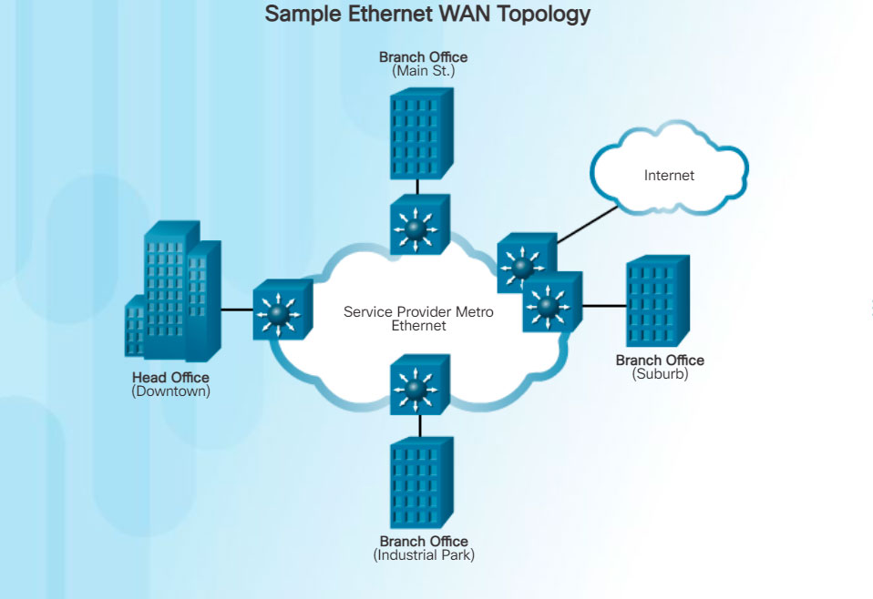

Ethernet was originally developed to be a LAN access technology. Originally Ethernet was not suitable as a WAN access technology because at that time, the maximum cable length was one kilometer. However, newer Ethernet standards using fiber-optic cables have made Ethernet a reasonable WAN access option. For instance, the IEEE 1000BASE-LX standard supports fiber-optic cable lengths of 5 km, while the IEEE 1000BASE-ZX standard supports cable lengths up to 70 km.
Service providers now offer Ethernet WAN service using fiber-optic cabling. The Ethernet WAN service can go by many names, including Metropolitan Ethernet (MetroE), Ethernet over MPLS (EoMPLS), and Virtual Private LAN Service (VPLS).
There are several benefits to an Ethernet WAN:

Note: Ethernet WANs have gained in popularity and are now commonly being used to replace the traditional Frame Relay and ATM WAN links.